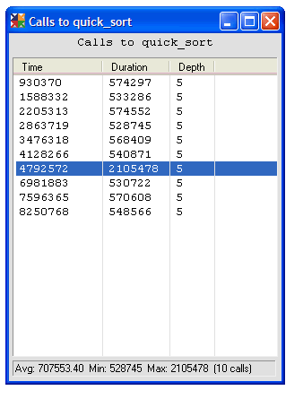

Figure 5:
Duration in processor clock cycles of each call to the
quick_sort()
function from Listing Two. You can see that the highlighted call takes almost four times as long as the others.
Back to Article